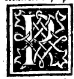

CAPITEL II¶
Vorrede des Ehrwürdigen Pater Magister Luca Pacioli aus Borgo San Sepolchro vom Orden der Minoriten, und Professor der heiligen Theologie zum Compendium über die göttliche Proportion aus den mathematischen Wissenschaften.

„Aus Verwunderung fing man an zu philosophiren”, das besagt, Erlauchter Herzog, das vorgelegte Citat des Meiters derer, welche wissen, dass aus dem Sehen das Wissen seinen Anfang nimmt, so wie er dasselbe an einem andern Orte versichert, indem es sagt: dass nichts im Geiste existirt, ehe es vorher in der Empfindung vorhanden. Das heisst, dass kein Ding zum Verständniss gelange, ehe es sich nicht vorher in irgend einer Weise den Sinnen offenbart habe. Und’ von unsern Sinnen, so wird von den Weisen geschlossen, ist das Sehen das vornehmste.
Daher wird nicht ohne Grund gemeinhin gesagt, dass das Auge die erste Pforte sei, durch welche der Verstand wahrnimmt und kostet, wie es an jener Stelle enthalten ist, dass als die ägyptischen Priester beim Anblick der Mondfinsterniss sehr erstaunt dastanden, und nach dem Grund suchten, dieselben durch wirkliche Wissenschaft fanden, dass dieses natürlich zugehe, durch den Dazwischentritt der Erde zwischen Sonne und Mond, womit sie befriedigt waren. Und von da nach und nach mit dem Lichte der fünf Geistesfenster schärfer forschend, füllten ihre Nachfolger zu unserem Nutzen mit ihren tiefen Kenntnissen eine zahllose Menge von Büchern.
Denn wie ein Gedanke aus dem andern entspringt, so gingen aus jenem nachher viele andere hervor. Indem ich hierüber mit mir selbst zu Rathe ging, beschloss ich zu diesem sehr nützlichen, aus den mathematischen Wissenschaften auserlesenen Compendium die Feder zu ergreifen, und zugleich damit eigenhändig materiell zum allgemeinen Nutzen in der ihnen eigenen Gestalt ihre Körper genau herzustellen, und sie mit dem vorliegenden Compendium Euer herzoglichen Hoheit zu überreichen.
Bei ihrem ungewohnten Anblicke, wie Etwas, was unseren Zeiten vom Himmel überkommen, zweifle ich nicht, dass Ihre leichte und scharfsinnige Einsicht daran sehr grosses Wohlgefallen habe, besonders wenn Sie mittelst des vorerwähnten Lichtes, bei nicht geringerem Forschungseifer, als die alten ägyptischen Priester gelegentlich der genannten Mondfinsterniss, Ursachen und innigste Harmonie jener Formen mit Hilfe und Anweisung des vorgelegten Tractats finden werden.
Daher bin ich gewiss, dass, wenn sich schon in der Vergangenheit dem, der nur in einem Theil jener vorherbesagten Wissenschaften und Disciplmen vorraussagte, derselbe reich und ergiebig sich dargeboten, inZukunft jene sich sehr viel grossartiger und reicher gestalten werden, und dass umsomehr mit aller emsigen Sorge Ihre lieben Vertrauten und verehrenden Untergebenen und andere Wohlgesinnte zur Aneignung derselben zu ermahnen seien, insofern die genannten mathematischen Wissenschaften Fundament und Leiter sind, zur Erkenntniss jeder anderen Wissenschaft zu gelangen, insoferne sie vom ersten Grade der Gewissheit sind, wie es der Philosoph versichert, indem er Folgendes sagt:
„Die als mathematisch bezeichneten Wissenschaften sind ersten Grades der Gewissheit, und die Naturwissenschaften folgen ihnen.” Es sind, wie gesagt, die mathematischen Wissenschaften und Disciplinen vom ersten Grade der Gewissheit, und ihnen folgen alle Naturwissenschaften, Und ohne ihre Kenntniss ist es unmöglich, irgend eine andere Wissenschaft wohl zu verstehen und in der Weisheit steht noch geschrieben: „Weil Alles aus Zahl, Gewicht und Mass besteht,” d, h. dass Alles, was im höheren oder niederen Universum als Viertes sich abtheilt, nothwendigerweise der Zahl, Gewicht und Mass untergeordnet sein muss.
Und hinsichtlich dieser drei Dinge sagte Aurelius Augustus In seinem Buche: Vom Staate Gottes, Der grösste Künstler werde insofern aufs Höchste gelobt, als er in ihnen „Etwas entstehen liess, was vorher nicht vorhanden gewesen”. In Folge Ihrer liebenswürdigen Ermahnung begreife ich, dass Viele mit dem Nutzen solch herrlichen Gewinnes unbekannt, aus dem Schlaf und geistigen Traum aufwachen und mit allem Eifer und Sorgfalt suchen müssen, sich ganz jene anzueignen, und es wird Anlass, dass in ihnen das Jahrhundert seiner Zeit neu erstehen und dass sie reeller und rascher in allen ihren Studien irgend welcher Wissenschaft zur Vollendung gelangen müssen.
Und ausser dem guten Rufe und würdigen Empfehlung Euer herzoglichen Hoheit, wird unter Ihrer erhabenen Herrschaft die Rechtschaifenheit nicht wenig unter Ihren lieben Vertrauten und geliebten Untergebenen zunehmen, welche stets zur Vertheidigung derselben völlig bereit, nicht weniger wie der berühmte und erfindungsreiche Geometer und verdienstvolle Architekt Archimedes für seine Vaterstadt gethan, welcher (wie berichtet) mit seinen neuen und mannigfachen Erfindungen von Maschinen eine lange Zeit hindurch die Stadt Syracus gegen die Herrschaft und kriegerischen Erfolg der Römer so lange, bis dieselben sie durch Marcus Marcellus offen zu erstürmen suchten, unversehrt erhielt.
Und aus alltäglicher Erfahrung ist Euer herzoglichen Hoheit nicht verborgen (dieweil schon seit vielen Jahren Ihres berühmten Vaters Andenken, ganz Italien und beiden Gallien, dem transalpinischen und cisalpinischen, Autor, Lehrer und Richtschnur darin gewesen), dass die Vertheidigung der grossen und kleinen Staaten, mit anderem Namen Kriegskunst genannt, unmöglich ohne die Kenntniss der Geometrie, Arithmetik und Proportion insbesondere, ehrenvoll und nützlich ausgeübt werden könne. Und nie kann schliesslich ein gutes Heer, welches zum Angriff oder zur Vertheidigung ausgesandt, sich mit Allem wohl versehen nennen, wenn sich dabei nicht Ingenieure und ein specieller Constructeur neuer Maschinen beigeordnet findet, wie wir kurz zuvor vom grossen Geometer Archimedes von Syracus erwähnt haben.
Wenn man allgemein alle seine Artilleriegeräthe wohl betrachtet, nehme man was man will, wie Bastione und andere Walle, Bombarden, Wurfmaschinen, Schleuderapparate, Steinschleudern, Rohonfe, i) Bailisten, Kastapulte, Widder, Schildkröten, Mauerbrecher, Katzen, mit allen andern zahllosen Maschinen, Apparaten und Instrumenten, so werden sie sich stets nach Zahlen, Mass und ihren Verhältnissen gebaut und eingerichtet finden. Was anders sind Felsen, Thürme, Ravehne, Mauern, Gegenmauern, Gräben, grosse Thürme, Zinnen, Mäntelchen und andere Festungswerke auf dem Lande, in Städten und Schlössern, als ganz Geometrie und Proportionen, mit den dazu nöthigen Wasserwagen und Lothen gewogen und gerichtet?
Durch nichts Anderes waren die alten Römer so siegreich, wie Vegetius, Frontinus und andere ausgezeichnete Schriftsteller schreiben, als durch die grosse Sorge und fleissige Vorbereitung von Ingenieuren und sonst noch Admiralen zu Lande und zu Wasser, welche ohne die mathematischen Disciplinen, d. h. Arithmetik, Geometrie und Proportionen, unmöglich genügen, was die alten Historien von Livius, Dyonysius, Plinius und anderer klar und deutlich machen. Unter ihnen ist Roberto Valtorri, der sehr erfahrene Ariminenser, der, welcher I) Fehlt entsprechende Bezeichnung. in seinem werthvollen Werke, von den Kriegsinstrumenten betitelt und dem Erlauchten Herrn Sigismund Pandolfo gewidmet sämmtliche behandelte.
Und von genannten Maschinen und Instrumenten gibt der genannte Riminenser z. B. in seinem Buche Zeichungen und von noch viel mehr anderen.
Euer Hoheit eng verbundener Verwandter Friedrich von Feltre seligen Angedenkens, erlauchtester Herzog von Urbino, Hess ringsum vom Fusse an das ganze staunenswerthe Gebäude seines edlen und bewunderungswürdigen Palastes in Urbino mit einer Einfassung massiven und schönen Steins durch die Hand würdigster Steinmetzen und Sculptoren regelrecht umgeben. So wie man auch unter Andern bei Julius Cäsar in seinen Commentarien über die kunstvolle Brücke liest. Wie ferner bis auf den heutigen Tag in der würdigen Tudertiner Stadt in Umbrien in der Kirche des heiligen Fortunatus unserm heiligen Kloster von Eures seligen Vaters Andenken noch eine grosse Menge von sehr dicken Tauen offen herabhängen, welche er zu einer Brücke über den Tiber bei seinem berühmten erlangten Siege regelrecht anordnete.
Auch kam durch keine andern Mittel unser sehr scharfsinniger Scotus zu den grossen Speculationen der heiligen Theologie, als durch die Kenntniss der mathematischen Disciplinen, wie aus allen seinen heiligen Werken erhellt. Besonders wenn man wohl beachtet die Untersuchung seines zweiten Buches über die Meinungen, als er forschend fragt, ob der Engel seinen eigenen und bestimmten Aufenthaltsort für seine Existenz habe, worin er wohl zeigt, dass er das ganze herrliche Buch unseres scharfsinnigsten Megarenser Philosophen Euklid verstanden habe. Durch nichts Anderes zeigen sich gleichfalls alle Texte des Fürsten deren, welche Physik, höhere Metaphysik verstehen und auch die übrigen schwer, als durch die Unkenntniss der schon genannten Disciplinen.
Durch nichts Anderes ist Mangel an guten Astronomen als in Folge des Mangels an Arithmetik, Geometrie, Proportionen und Proportionalität. Und von zehn richten sich neun in ihren Urtheilen nach Tafeln, Taschenbucheri! und anderen Dingen, die von Ptolomaus, Albumansar, Ali al Fragano, Gebe, Alfonso, Bianche, Prodocino und Anderen berechnet sind, die lin Folge der wenigen Umsicht ihrer Schreiber mangelhaft oder verschlechtert sein können. Und wenn sie sich in Folge dessen auf jene verlassen, verfallen sie in die grössten und evidentesten Irrthümer, zu nicht geringem Schaden und Vorurtheil derer, welche sich auf sie verlassen.
Die ausserste Schärfe aller Municipalgesetze besteht, gemäss den mir mehrfach von Sachverstänständigen gemachten Auseinandersetzungen, in der Beurtheilung der Wasseranschweramungen und Umspülungen der Gewässer in Folge ihrer excessiven Ueberschwemmung, wie über sie ihr bedeutendster Vorsteher, Bartolo von Sassoferrato, einen besonderen Tractat verfasst und Tiberina betitelt, in seiner Vorrede viel Geometrie und Arithmetik entwickelt hat, indem er versichert, sie gleicherweise von einem unserer Fratres Namens Guido, Und Professor der heiligen Theologie aus jenem Tractate vom Geben und Nehmen erlernt zu haben, was der Tiber durch seine Ueberschwemmungen mitunter thut; besonders in jenen, gegen Perugia hin gelegenen Gegenden ist die Wasserfiuth enthalten.
Dabei hat er sich stets mit geometrischen gradlinigen und krummlinigen Figuren, Schritt für Schritt unserm sehr scharfsinnigen Philosophen Euklid sich anschliessend, gerichtet und dasselbe mit grosser Sorgfalt zum Abschluss geführt. Ich spreche nicht von der süssen, musikalischen Harmonie, noch von der höchsten Zier und Geisteserhebung der Perspective, und von der sorgsamen Anordnung der Architektur, der Beschreibung des See- und Landuniversums, und der Lehre von den Körpern und Himmelserscheinungen, sofern darüber das, was bis jetzt gesagt worden, klar erscheint.
Ich lasse zu geringerem Ueberdruss des Lesers andere sehr praktische und speculative Wissenschaften mit allen anderen für die menschlichen Verhältnisse nothwendigeren mechanischen Künsten beiseite, bezüglich welcher ohne ein Urtheil über diese ihre Erlangung und die Beobachtung der angemessenen Ordnung in denselben unmöglich ist.
Und es ist deswegen nicht zu verwundern, wenn es zu unsern Zeiten wenig gute Mathematiker gibt, weil die Seltenheit guter Lehrer schuld daran ist, zugleich mit dem Schlünde Schlaf, und müssigen Federn, und zum Theil der Schwäche der modernen Geister. iSg Daher ist es unter den Gelehrten nach gemeinem Sprichwort gebräuchlich geworden zu sagen:,.Das Gold wird durchs Feuer erprobt, und der Geist durch die Mathematik”, das heisst, die Echtheit des Goldes zeigt das Feuer und die Bewandertheit des Geistes die mathematischen Disciplinen, was dem Inhalt nach sagen will, dass die gute Einsicht in den mathematischen Fächern sehr geeignet zu jedweder anderen macht, dass sie von grosser Abstraction und Subtilität seien, weil es immer ohne greifbaren Stoff zu betrachten gilt.
Und sie sind es in der That, welche, wie man nach einem Tuskischen Sprichwort zu sagen pflegt, das Haar in der Luft spalten. Deshalb verweigerte der alte göttliche Philosoph Plato nicht mit Unrecht den Zutritt zu seinem berühmten Gymnasium den in der Geometrie nicht Erfahrenen, indem er an die Spitze seines Hauptportals ein Schild mit grosser deutlicher Schrift anbringen Hess von folgendem Wortlaut: „Hier möge kein der Geometrie Unkundiger eintreten,” d. h. wer nicht ein guter Geometer wäre, solle nicht dort eintreten. Das that er, weil in ihr verborgen Jede andere Wissenschaft sich wiederfindet.
Von ihrer angenehmen Süssigkeit, war vor ihm, der sorgsamste Naturforscher, Pythagoras, durch die Entdeckung des rechten Winkels, von grosser Freude und Jubel erfüllt wie man von ihm liest, und Vitruv erzählt, der den Göttern hundert Stiere zum Opfer brachte, wie unten noch erwähnt werden wird.
Und dies diene vorerst den mathematischen Wissenschaften zur Empfehlung, deren Anzahl in dieser Eurer berühmtem Stadt tagtäglich Dank Eurer herzoglichen Hoheit Gunst, nicht wenig zu wachsen beginnt in Folge der fleissigen neuerdings durch Sie eingeführten öffentlichen Vorlesungen zum Nutzen für die ausgezeichneten Hörer, denen ich, daselbst der Gnade gemäss die mir vom Höchsten in diesen gewährt, klar und mit aller Sorgfalt (nach ihrem Urtheil) den erhabenen Band des vorgedachten Euklid in den Wissenschaften der Arithmetik, Geometrie, Proportionen und Proportionalitäten auseinandersetze. Und bereits bin ich mit zehn seiner Bücher zum würdigsten Abschluss gekommen, indem ich stets zu seiner Theorie noch unsere Praxis zu grösserem Nutzen und vollem Verständniss jener, und zu vorliegender Ausführung dieses Werks den Rest der Zeit verwende.